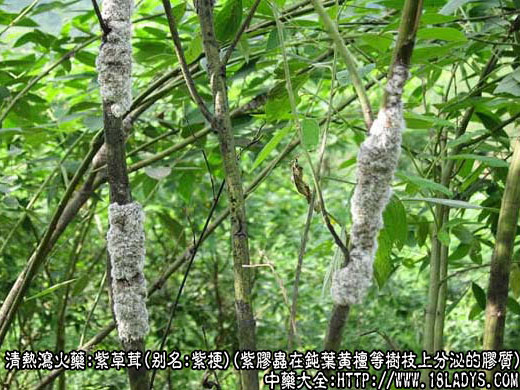
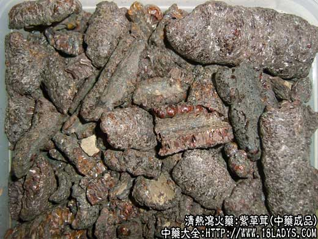
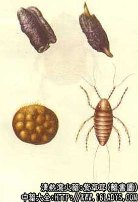

别名：紫梗、紫胶、紫虫胶、洋干漆（精制品）。
来源：为胶蚧科昆虫紫胶虫在豆科植物钝叶黄檀等树枝上所分泌的胶质。野生或培养。
产地：云南、四川、台湾。国外主产于印度、缅甸、印尼等地。
性状鉴别：呈半圆柱形，表面紫褐色或紫红色，凹凸不平，有皱纹及小虫眼孔隙，依附树枝出凹入成沟。质硬而脆。遇热则软化而发粘。断面有平行排列的长圆形虫窝。气微味淡。以块大，紫褐色，质松脆，无杂质者为佳。
主要成分：含虫胶质、蜡、色素等。
药理作用：清热凉血解毒，破瘀行气止痛。
性味：苦、平。
归经：入肺、肾经。
功能：清热、凉血、解毒。
主治：斑疹不透、麻疹不出痈疮肿毒。
临床应用：主要用于清热麻疹之血热，用于麻疹初出时，配合轻升透发的药物，如葛根、升麻等，既能清解痘毒，又可助麻疹透发（如单用紫草茸，轻升之力不足），再加小量川芎，则疹出更为畅快，方如紫草茸汤。
与紫草比较：紫草茸既能解毒活血，又无作泻之患，这是它胜过紫草的地方。
用量：6～12g。